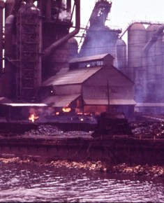

|
 |
The making of steel has been around since roughly 300 BCE. The procedure involves smelting iron ore and applying other processes to remove the impurities. An Englishman, Sir Henry Bessemer, invented a technique (known as the Bessemer process) for producing steel more efficiently and inexpensively. Today, steel is made by using processed iron ore, called taconite, in the form of iron ore pellets. The iron ore is mixed with limestone and coke. While hot, the molten metal can be rolled into various other shapes to be used by hundreds of other industries for durable goods, autos, buildings, and bridges. Other process can be applied to the steel during this time or after it has cooled to make the steel meet specific needs of various industries. |